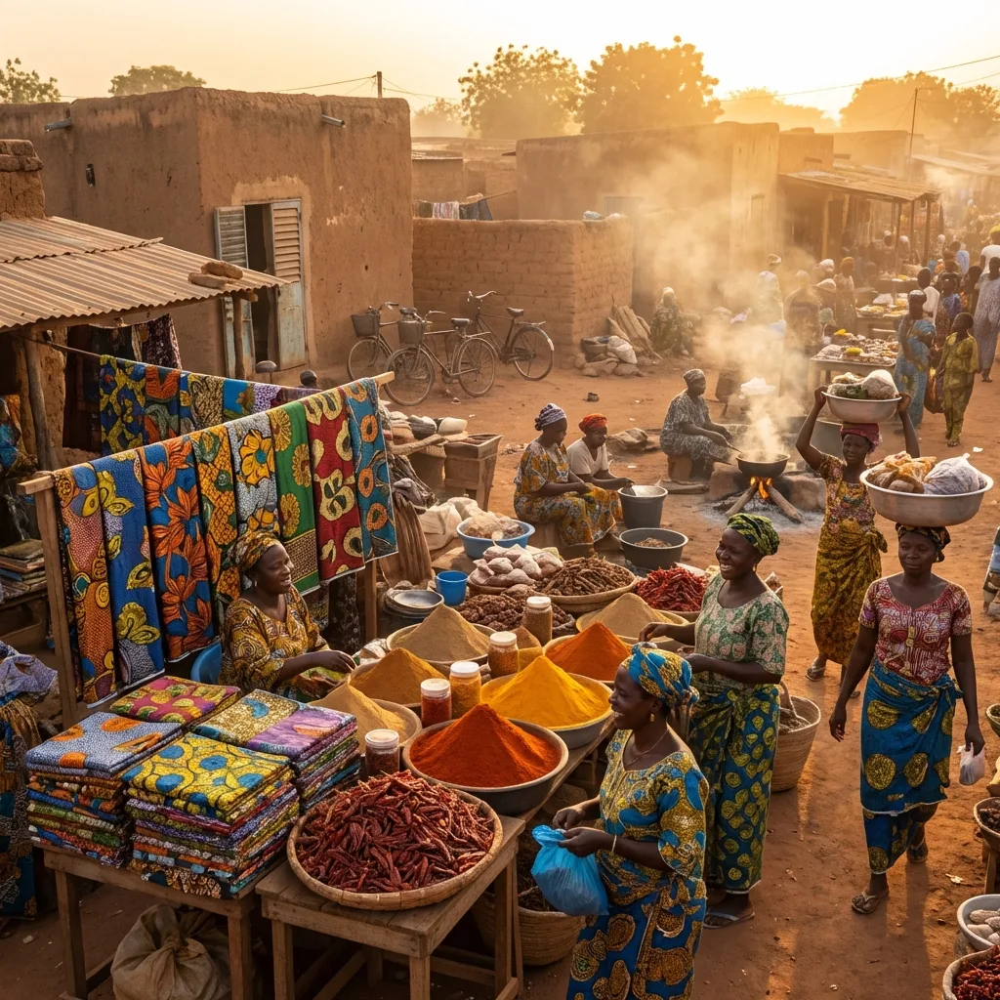

Marché International Arzeke
Le 2e plus grand marché à ciel ouvert du Bénin.
Superficie de 10 530 m² située dans le quartier Baparapé à Parakou.
Présentation Générale
Le Marché Arzeke de Parakou, ou marché central de Parakou, est un gigantesque marché international à ciel ouvert. Se positionnant comme le deuxième plus grand marché du Bénin (juste après Dantokpa), ce pôle économique incontournable compte plus de 1 700 places vendeurs.
Quincaillerie & Équipements
Alimentaire & Boucherie
Hygiène & Beauté
Historique & Évolution

L'histoire du marché Arzeke s'inscrit profondément dans les racines marchandes de Parakou. Initialement, le site actuel était une vaste cour d'escale des caravaniers. Cette cour faisait stratégiquement face à la concession du Baparapé de Parakou, personnalité chargée de représenter les multiples communautés étrangères auprès des autochtones.
À l'époque, ce vaste espace grouillant de vie était un lieu de troc ancestral entre les commerçants venus de loin et les habitants de la région. L'endroit était placé sous l'autorité d'un chef traditionnel qui veillait rigoureusement aux cérémonies nécessaires pour garantir la paix et la sécurité de tous les usagers.
Rénovation et Rayonnement International
Longtemps désigné sous l'appellation de « Marché en commun », l'Arzeke a toujours attiré des vendeurs provenant des pays limitrophes du Bénin : tisserands du Burkina Faso, négociants du Niger ou marchands du Nigeria s'y côtoient et y vendent leurs riches marchandises.
Afin d'adapter cette infrastructure historique aux besoins de l'époque moderne, des travaux de rénovation de grande ampleur débutent en 1996 sur financement de l'Agence Française de Développement. L'immense marché central de Parakou, dans son architecture actuelle, est officiellement inauguré en juillet 1997.